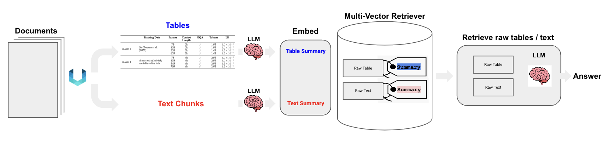

多模态RAG-多向量检索器 [10][11] #
semi-structured (tables + text) RAG [20] #
 分析pdf中表格
multi-modal (text + tables + images) RAG [13] #
 分析PDF中图片
分析PDF中图片
-
Option 1 [基于CLIP] [23] [30][32][33]
- Use multimodal embeddings (such as CLIP) to embed images and text
- Retrieve both using similarity search
- Pass raw images and text chunks to a multimodal LLM for answer synthesis
{选项1：对文本和表格生成summary，然后应用多模态embedding模型把文本/表格summary、原始图片转化成embedding存入多向量检索器。对话时，根据query召回原始文本/表格/图像。然后将其喂给多模态LLM生成应答结果。}[10]
-
Option 2 [21]
- Use a multimodal LLM (such as GPT4-V, LLaVA, or FUYU-8b) to produce text summaries from images
- Embed and retrieve text
- Pass text chunks to an LLM for answer synthesis
【将图片转成摘要，和其他文本信息整合在文本粒度进行检索】[12]
{选项2：首先应用多模态大模型（GPT4-V、LLaVA、FUYU-8b）生成图片summary。然后对文本/表格/图片summary进行向量化存入多向量检索器中。当生成应答的多模态大模型不具备时，可根据query召回原始文本/表格+图片summary。}[10]
-
Option 3 [24] [31][34]
- Use a multimodal LLM (such as GPT4-V, LLaVA, or FUYU-8b) to produce text summaries from images
- Embed and retrieve image summaries with a reference to the raw image
- Pass raw images and text chunks to a multimodal LLM for answer synthesis
【实际模型输入使用的是图片】
【图片概要依然是用于检索（GPT-4V，LLaVA，FUYU-8b）】[12]
{选项3：前置阶段同选项2相同。对话时，根据query召回原始文本/表格/图片。构造完整Prompt，访问多模态大模型生成应答结果。}[10]
private multi-modal (text + tables + images) RAG [22] #
组件 #
- pdf解析
unstructured - store
MultiVectorRetriever - 元数据+数据
参考 #
实战 #
1xx. Using Multi-Modal LLMs page21
notebook #
-
Semi_Structured_RAG notebook
Advanced-RAG semi_structured_data notebook {半结构化-解析pdf中的表格， 运行没问题，能问表格中的数据} -
Semi_structured_and_multi_modal_RAG notebook
-
Private Semi-structured and Multi-modal RAG w/ LLaMA2 and LLaVA notebook {多模态- 解析pdf中的图片 运行有问题}
Private Semi-structured and Multi-modal RAG w/ LLaMA2 and LLaVA notebook -
Chroma multi-modal RAG notebook
-
Multi-modal RAG notebook
template (失效了) #
- rag-multi-modal-local
OpenCLIP(image embedding) + bakllava(answer synthesis) - rag-multi-modal-mv-local
bakllava(image summaries embedding) + bakllava (answer synthesis) - rag-chroma-multi-modal
OpenCLIP(image embedding) + GPT-4V (answer synthesis) - rag-gemini-multi-modal
OpenCLIP(image embedding) + Gemini(answer synthesis) - rag-chroma-multi-modal-multi-vector
GPT-4V(image summaries embedding) + GPT-4V (answer synthesis)
llamaindex #
1xx. 朴素多模态RAG如何实现？兼看RAG上下文过滤方案FILCO及202402大模型早报
1xx. Advanced Multi-Modal Retrieval using GPT4V and Multi-Modal Index/Retriever
1xx. Multimodal RAG pipeline with LlamaIndex and Neo4j
1xx. neo4j_llama_multimodal.ipynb git